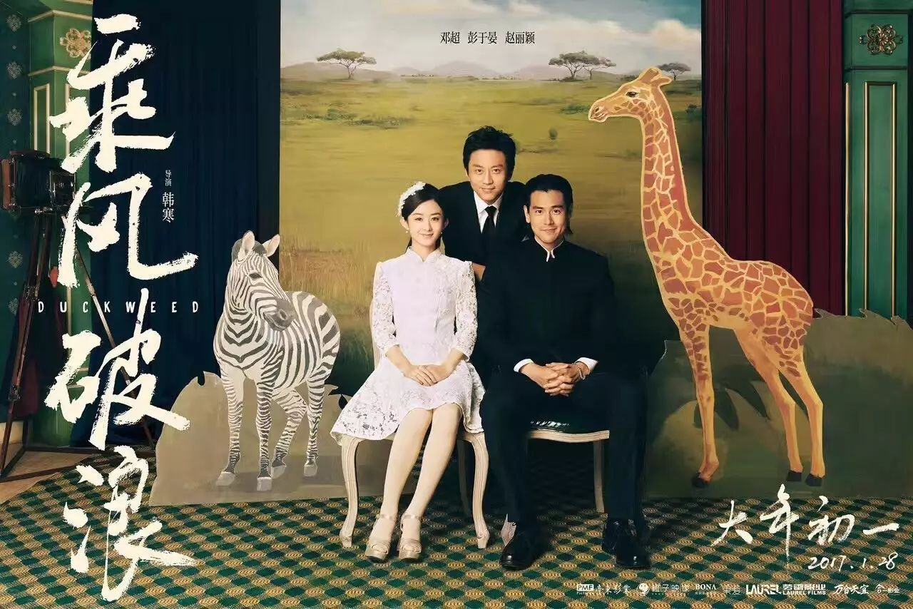
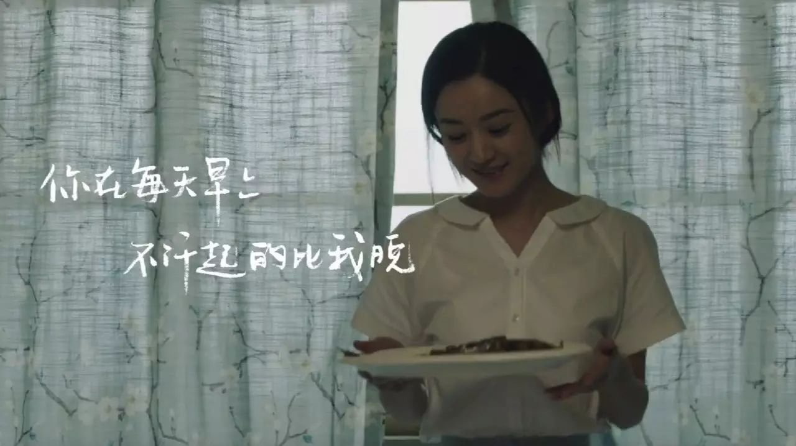
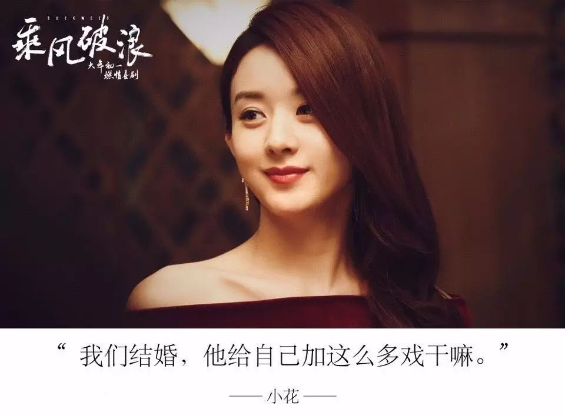

沉默的女性 | 《乘风破浪》中的男性凝视

这段时间，电影《乘风破浪》因其主题曲不尊重女性而收到了很多很差的评价。稻子在观看了影片之后，从性别的视角带来了他的看法。如果你有什么不同的看法，欢迎在下方留言和大家一起讨论。

我去电影院看了《乘风破浪》，很后悔，影片令我尴尬到无以复加。
非常失望地总结一下：笑点低俗等缺点不说，男性凝视严重，性别刻板印象重，女性形象受到扁平化和物化，没有任何反转。
观影前就有人和我说，不要从韩寒的言行和那首巨婴宣言解读他的电影，要给艺术发展的空间。我不是专业的影评人，就不讲什么象征手法表现手法是否高明笑点是否高雅了，我只求那些迫不及待站到批驳者反面的影评人们给我一个以女性主义者视角解读电影的机会。

剧情是老套的穿越题材：父亲（阿正）不支持男主（阿浪）的赛车理想和鲁莽性格，男主就偏拿个赛车大奖给父亲看，在赛后带父亲兜风路上不慎与火车相撞双双送医，男主濒死之际来一遍走马灯（flash back）顺便穿越回自己尚未出生的年代见证父亲作为一个小混混的峥嵘岁月，完成自己心愿（见一眼早亡的母亲）后却仍不能力挽狂澜拯救父亲的过去，回到现实病床上的男主理解了父亲的良苦用心，相逢比心泯恩仇，可喜可贺可喜可贺…
个头啦。
那首引起轩然大波的《男子汉宣言》是男主为青年时代的父母操办婚礼时的贺曲，觥筹交错地就唱出来了，不能起得比我晚啊不能睡得比我晚啊，非常自然大方毫无讽刺之意，确是毫无担当的巨婴的真情实感。也只唱了几句，大概是怕后面那些“我可能不会出轨”唱出来太令人寒心吧。
而所谓的“反转曲”，表达丈夫对妻子承诺的《男子汉誓言》，并没有在影片中出现。

除此之外，影片充满了大男子主义，而对女性着笔甚少。剧本作者让观众看到的形象，无关性别，都应该是生动丰满的。而本片中出现的女性形象，却是刻板且严重缺损的，充满着强大的男性凝视。
在反对我之前，先来看一下“男性凝视”的概念吧。
男性凝视（Male Gaze），是一种社会文化现象。传统中把妇女定位于被看者、置于男性凝视的主控操纵，宣扬男性的凝视权力，将女性角色建构成男权社会所希冀的具有“女性气息”的角色。它是男女差异和不平等的表现，是性别化凝视一直以来的主题。
男权社会下，女性是被看的第二性，男性则通过各种媒介和渠道享受窥视愉悦，成为观看和凝视的第一性。社会规范也把这种凝视与被凝视的关系定格和常态化，并发展出细致而繁多的“言语教诲”，限定了女性的视线和目光范围，同时鼓励男性的强势姿态。
本片中出现的女性角色不少，但她们仅仅只是作为男性角色们的伴侣出现。她们的名字、背景、特质是缺失的，她们被赋予的动作简单且重复（满足男性角色的生活需求），她们的感情和抱负被明显地压抑和隐藏，只剩下一个作为性伴侣或是爱侣的符号，十分空洞。通俗一点说，我在本片中看不到哪怕一个有血有肉的女性角色。
剧情中对男主等人影响较大的只有两位女性；一位性工作者，男主在她的帮助下误打误撞找到了开赛车的营生；牛爱花（张素贞/小花），男主早亡的母亲，而男主在过去世界的最大心愿便是使父亲与母亲结合并阻止母亲的自尽，可以说她是本片的线索之一。但是将女性形象单纯地作为一个线索或是剧情的助推器，难道不是深刻的物化女性的表现吗？小花甚至还被阿正唆使去诱惑男主等人，用作检验手下是否忠诚的工具。

小花的形象亦不完整。因为本片是以男性作为主角和主视角的，女性便被放到了“被看”的位置，她们接受着来自经济、道德、法制的“凝视”，变得扁平且卑微。她的生活被锅碗瓢盆所占据，从未在片中表达过自己，仿佛一切的行动意义只是为阿正的生活服务。男主回到过去最想做的是看自己的生母一眼，但男主除了对阿正的叮嘱，也并没有为小花做出什么实际行动来挽救她的命运，导致过去无法改变，小花生子后仍在抑郁中死去，而我们仍然不知道她的真实诉求。在充满男性特质的凝视中，女性角色是沉默的，亦没有掌控自己命运的权利，作者也没有想过为她赋予这样的权利。相比之下，男性角色灯红酒绿光鲜亮丽，但热闹是他们的，女性什么也没有。
形象是为作品服务的。而残缺的女性形象摆在面前，我解读出的本作品主旨只能是：强化男权根基，力求将男权主义发扬光大。
最后再讲一些和影片本身关系不大的东西。
有很多人（韩寒也在内）认为女性主义者过于上纲上线，批评一下直男癌就是过激得不行，甚至觉得女性主义者们损害了男性的权益，造成了另一种性别不平等。
但应该知道的是，中国的女性群体生存状态仍然不容乐观，中国仍然是男权社会。女性要回原本属于她们的权利，便会被深刻认同性别阶层固化的人驳为“侵犯”。殊不知，在男权社会，生理性别为男便是一项极大的特权，而特权阶层对平等的感觉就是压迫。时刻审视、反思是每一个拥有特权和红利的人都应该做的事；没有人和性别平等这个议题无关。坚持平等的立场，不应该受到谴责。
如果我们的年轻人都是看着《乘风破浪》这样的片子成长，平权的未来会变得越来越艰难。女性的身影在充满男性凝视的作品中逐渐刻板化、扁平化、淡化，成为夕阳下的一个剪影，一个符号；在这样的作品中，我们对性、对性别、对生命，还能领会到什么呢。

*推荐阅读*
点击文字直接查看